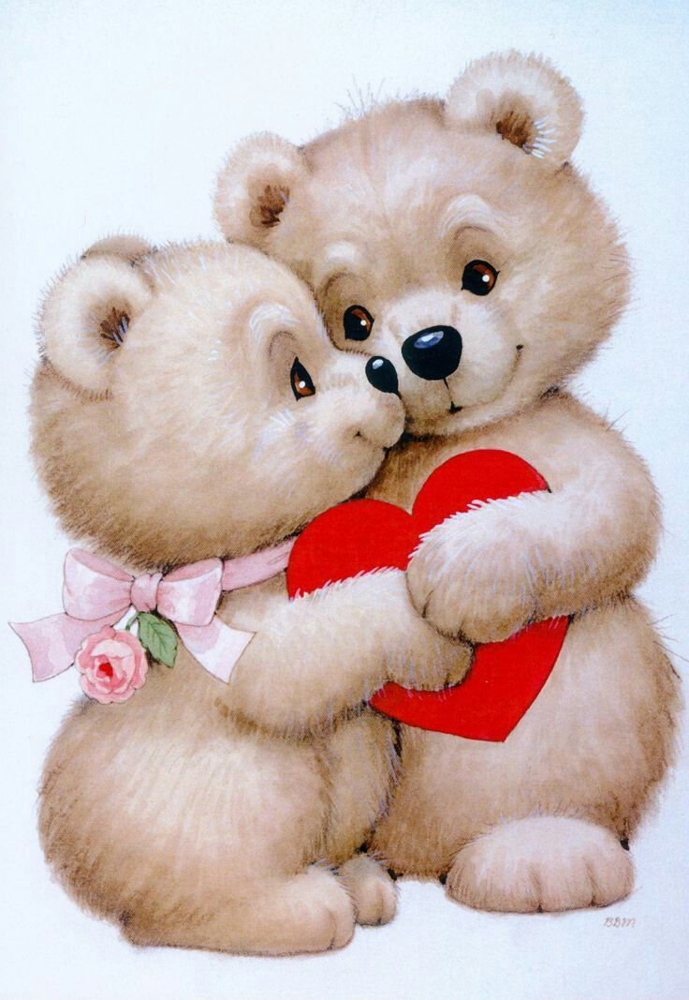
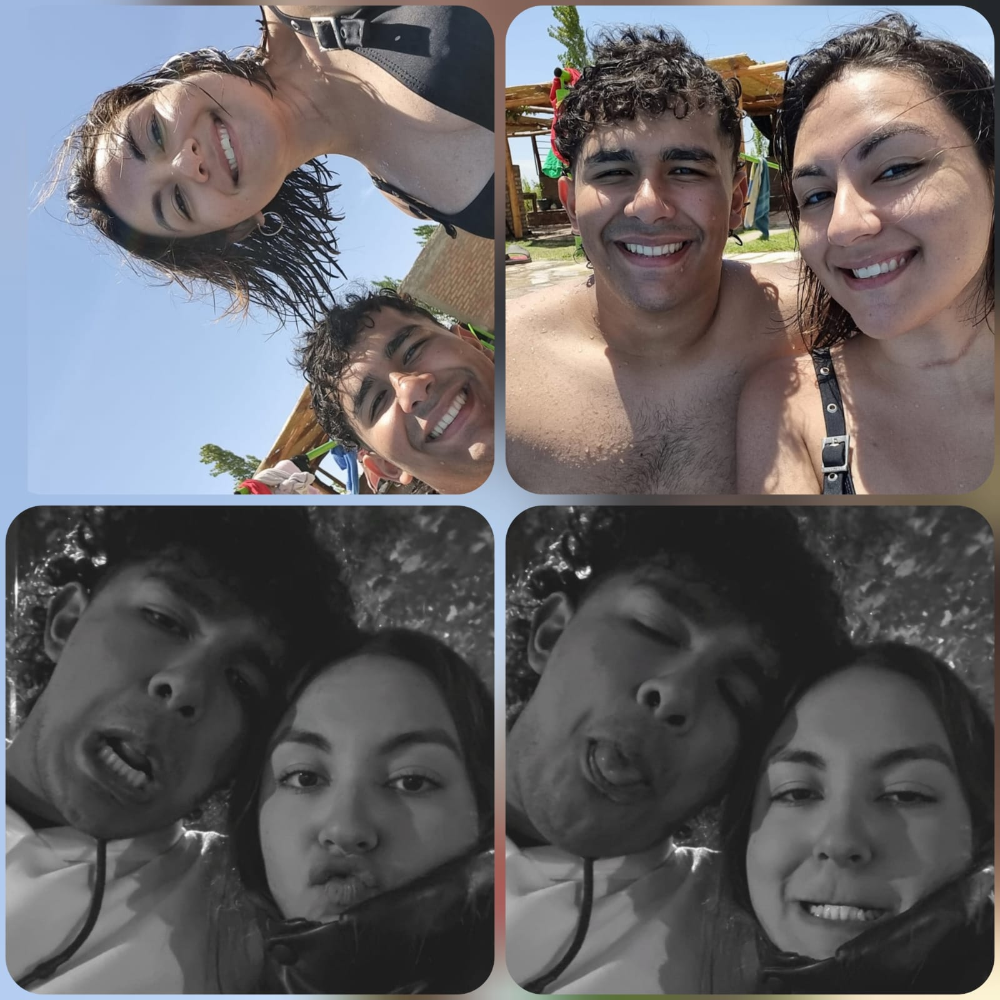
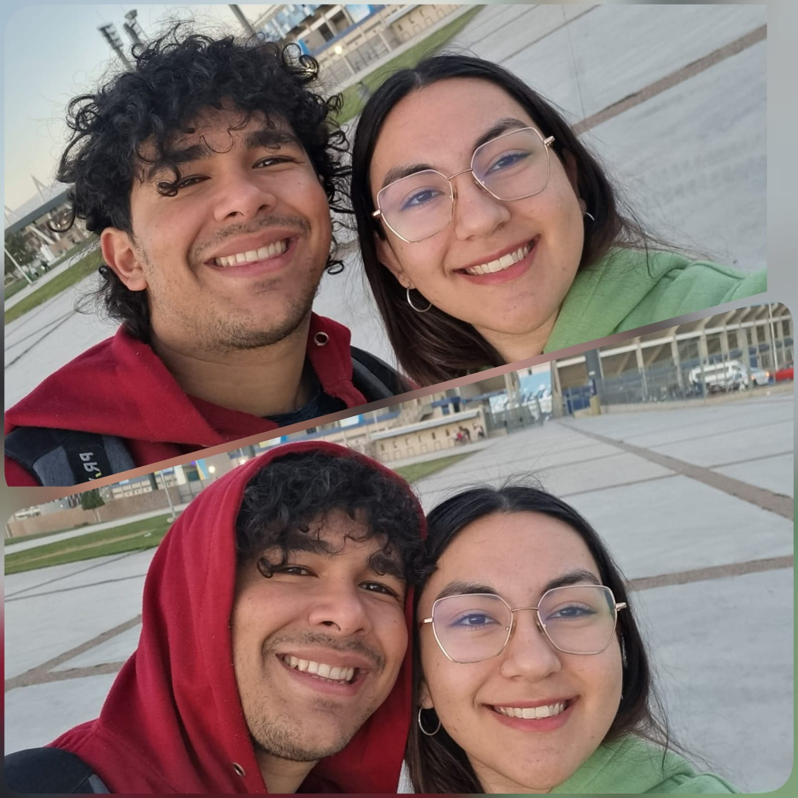
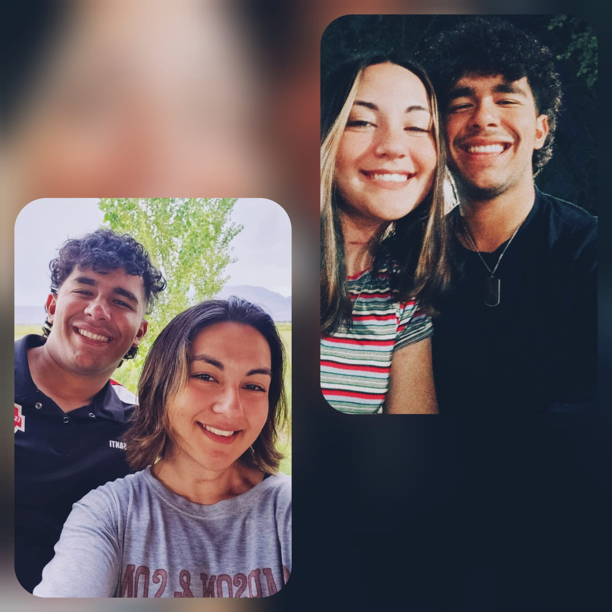

Feliz San Valentín AMOR, quería agradecerte por todo el apoyo que me diste en estos días y utilizar todo lo que aprendí para darte este péquelo detalle y seguir demostrando que te amo y que estoy feliz de pasar todos mis días junto a vos. A continuación, quiero decirte 4 de las tantas razones por la que quiero que siempre sean mi San Valentín y muchas cosas más.
Eres la personita más divertida que he conocido en toda mi vida, me encanta pasar días enteros riendo, jugando y armando planes con vos. Me encanta la sensación de que sin importar el plan o la actividad que surja, mientras este con vos sé que la voy a pasar excelente.
Ere una mujer que a pesar de que yo no sea una persona perfecta y tenga miles de errores, siempre me apoyas en todo lo que me propongo y me haces sentir que no hay algo que yo no pueda hacer y eso me encanta. Y por eso te prometo que sin importar la situación ahí voy a estar apoyándote y animándote para que siempre lo intentes y veas que eres capaz de muchas cosas mi amor.
Hola mi amor, en esta página de la pequeña carta que te quiero dedicar voy a decirte porque te amo. Te amo porqué eres esa personita que me complementa, me acompaña, me mima, me demuestra cariño, me abraza, me besa, me hace reír, me hace llorar, me cuida, me reta, me enseña, me hace ver que con la persona correcta todo es más fácil, por todo eso y más yo te amo y jamás cambiara eso. Mely, vos sos mi nena, mi mejor amiga, mi compañera, mi persona favorita y amo pasar días, semanas meses y años junto a vos, así que nunca dudes que sin importar la situación tu gordo siempre va a estar para abrazarte, cuidarte, apoyarte, hacerte reír y sobre todo Amarte. TE AMO.
